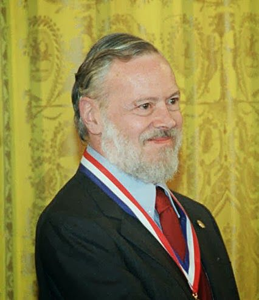
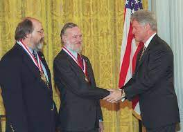

Dennis MacAlistair Ritchie
was an American computer scientist who “helped shape the digital era”. He created the C programming language and with long-time colleague
Ken Thompson
, the Unix operating system. Ritchie and Thompson received the Turing Award from the ACM in 1983, the Hamming Medal from the IEEE in 1990 and the National Medal of Technology from President Clinton in 1999. Ritchie was the head of Lucent Technologies System Software Research Department when he retired in 2007.
Background
Ritchie's
invention of C and his role in the development of Unix alongside Ken Thompson, has placed him as an important pioneer of modern computing. The C language is still widely used today in application and operating system development and its influence is seen in modern programming languages such as C++ and C#. Unix has also been influential, establishing concepts and principles that are now well-established precepts of computing. The popular GNU/Linux operating system and its tools are descendants of Ritchie's work, and the Windows operating systems include Unix compatibility tools and C compilers for developers.
Ritchie
has said that creating the C language "looked like a good thing to do", and that anyone else in the same place at the same time would have done the same thing, though Bell Labs colleague Bjarne Stroustrup, developer of C++ said that "If Dennis had decided to spend that decade on esoteric math, Unix would have been stillborn."
Following the success of Unix, Ritchie continued research into operating systems and programming languages, with contributions to the Plan 9 and Inferno operating systems, and the Limbo programming language.
C and Unix
Ritchie
is best known as the creator of the C programming language and a key developer of the Unix operating system, and as co-author of the definitive book on C, The C Programming Language (book), commonly referred to as K&R (in reference to the authors Kernighan and Ritchie).

Ritchie's
invention of C and his role in the development of Unix alongside Ken Thompson, has placed him as an important pioneer of modern computing. The C language is still widely used today in application and operating system development and its influence is seen in modern programming languages such as C++ and C#. Unix has also been influential, establishing concepts and principles that are now well-established precepts of computing. The popular GNU/Linux operating system and its tools are descendants of Ritchie's work, and the Windows operating systems include Unix compatibility tools and C compilers for developers.
Ritchie has said that creating the C language "looked like a good thing to do", and that anyone else in the same place at the same time would have done the same thing, though Bell Labs colleague Bjarne Stroustrup, developer of C++ said that "If Dennis had decided to spend that decade on esoteric math, Unix would have been stillborn."
Following the success of Unix, Ritchie continued research into operating systems and programming languages, with contributions to the Plan 9 and Inferno operating systems, and the Limbo programming languag
Awards

Turing Award
In 1983, Ritchie and Ken Thompson jointly received the Turing Award for their development of generic operating systems theory and specifically for the implementation of the UNIX operating system. Ritchie's Turing Award lecture was titled,
"Reflections on Software Research."
Notable things by Ritchie
A key developer of the Unix operating system
Ritchie was best known as the creator of the C programming language
He helped shape the digital era.
The Evolution of the Unix Time-sharing System
The Unix Time-sharing System
Portability of C Programs and the UNIX System
A Stream Input/Output System
The C Programming Language ( 1978 with Brian Kernighan see K&R)
Unix Programmer's Manual ( 1971)
Contributions to the Plan 9 and Inferno operating systems